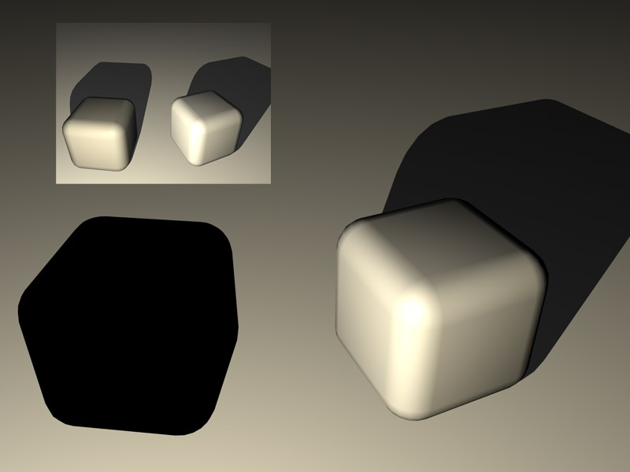
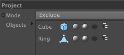

Function available in CINEMA 4D Prime, Visualize, Broadcast, Studio & BodyPaint 3D
工程
你可以在这里选择会受到灯光影响的对象。从对象管理器中拖放对象到对象框中。
如果灯光只需要照亮特定对象，将模式设置为包括，然后从对象管理器中拖放要照亮的对象名称到对象框中。如果要对特定对象关闭灯光，将模式设置为排除，然后从对象管理器中拖放要排除的对象名称到对象框中。


点击对象框中的任意对象旁的图标来启用或禁用照明、高光和投影。如果对象的子对象也需要由包括或排除控制，可以启用最右边的图标。
从左至右：
- 对象图标
- 照明
- 高光
- 投影
- 包括所有子对象
只在 CINEMA 4D Studio 中可用。这些选项定义了光源是否照亮烟雾、蒸汽或光源是否使烟雾、蒸汽产生投影。